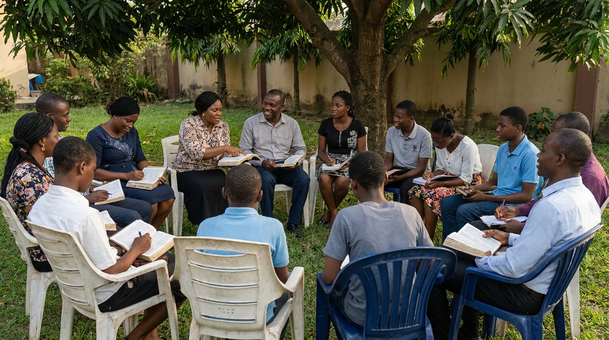
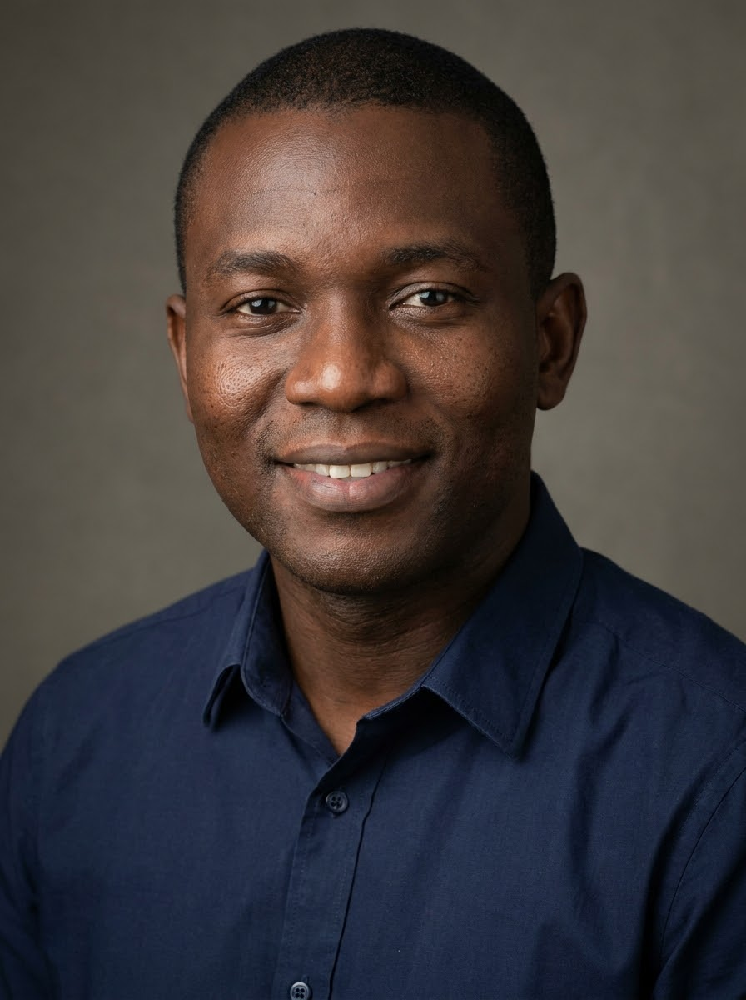

◷
Meeting Days & Time
- SundaysFellowship Meeting: 3:00 PM - 5:00 PM
- WednesdaysBible Study / Children's Bible Club: 5:00 PM - 6:30 PM
- ThursdaysPrayer Meeting: 5:00 PM - 6:00 PM
We are an interdenominational Christian fellowship committed to helping people know Christ, grow in Christ, and make Christ known.
Through Bible study, prayer, discipleship, evangelism, follow-up, children's ministry, youth and schools ministry, leadership development, training, camps, conferences, and retreats, we seek to raise believers who will live out their faith with conviction, character, competence, and purpose.
Whether you are a long-standing member of a church denomination, a young believer, a student, a youth, a parent, a church worker, or someone seeking to know more about Jesus Christ, there is a place for you here.
Our activities are designed to help people encounter Christ, grow in God's Word, develop their gifts, serve others, and live out their faith in everyday life.
We introduce children to God's Word and help them develop a personal relationship with Jesus Christ from an early age.
Through Bible clubs, children's fellowships, rallies, holiday programmes, Bible lessons, songs, games, and interactive activities, we create a safe and engaging environment where children can learn biblical truth, develop godly character, and grow in their faith.
We walk alongside young people as they navigate faith, education, relationships, career choices, peer pressure, and the challenges of contemporary society.
Through school visits, Christian programmes, Bible studies, rallies, counselling, mentoring, and discipleship, we encourage students and young people to build their lives on God's Word and make Christ known wherever they are.
We equip believers and Christian workers with the knowledge, skills, character, and spiritual maturity needed for effective service.
Our training activities promote leadership, responsibility, practical competence, spiritual growth, and a heart for serving God and others.
We help young people develop practical life skills and godly values that can help them make wise decisions, build healthy relationships, handle life's challenges, and resist negative peer influence.
Our emphasis is on developing the whole person - spiritually, morally, socially, and practically.
Our holiday camps provide opportunities for children and young people to encounter God's Word, build friendships, develop godly character, and grow spiritually in a joyful and engaging environment.
Through Bible teaching, prayer, discipleship, games, recreation, group activities, and practical learning, we create memorable experiences that encourage young people to follow Christ.
We organise conferences and retreats that bring believers together for biblical teaching, prayer, fellowship, spiritual renewal, discipleship, and Christian service.
These gatherings provide opportunities to deepen our understanding of God's Word, strengthen our faith, and receive encouragement to remain steadfast in our Christian walk.
God's Word is at the heart of everything we do.
Our Bible studies provide an environment where people can explore Scripture, ask questions, deepen their understanding of God's truth, and learn how to apply biblical principles to everyday life.
We encourage individuals, families, children, and young people to develop a consistent habit of reading and studying God's Word.
We believe in the power and importance of prayer.
Through prayer meetings, prayer cells, special prayer programmes, and intercession, we pray for individuals, families, churches, schools, Scripture Union, our communities, and our nation.
We take the message of Jesus Christ beyond our regular fellowship gatherings.
Through evangelistic outreaches, school ministry, church engagement, rallies, personal evangelism, and other mission activities, we seek to reach people with the Gospel and encourage them to become committed followers of Christ.
We believe that reaching someone for Christ is only the beginning.
Through visitation, personal contact, mentoring, encouragement, Bible study, and continued fellowship, we help new believers and members grow in their relationship with Christ and become established in the Christian faith.
We hold regular fellowship meetings where believers come together to worship, study God's Word, pray, encourage one another, and prepare for Christian service.
Our fellowship provides a supportive environment where people from different backgrounds and generations can grow together in faith.
Learn More About Us →
Thy word is a lamp unto my feet, and a light unto my path. - Psalms 119:105
There is a place for you to learn, serve, pray, connect and grow.
SU House, 64 Ikot Abasi Street, off Udotung Ubo Street, Uyo.
View contact details →Come fellowship with us and become part of an inter-denominational christian community pursuing spiritual growth and purposeful service among children, youths and adults.
Get startedYour prayers, time, skills and financial support can help strengthen discipleship, youth and children's work, schools visitation, outreach and other fellowship activities.
Different stages of life, one shared commitment to Christ, Scripture and purposeful service.
Committed to reaching children with the Gospel, helping them know and love Jesus Christ, understand and apply God's word, and grow in faith and godly character.
Explore → 02Reaching young people in schools and neighbourhoods with the Gospel of Jesus Christ.
Explore → 03Providing Christ-centred camping experiences where children, teenagers, youth, and adults can encounter God, study His Word, build godly relationships, and grow in faith.
Explore → 04Equipping and encouraging believers to deepen their walk with God, live out their faith, and become agents of transformation in their families, workplaces, churches, and communities.
Explore →Scripture Union gave me more than Christian activities; it gave me a foundation for my faith. Through Bible Study, quiet time, camps and fellowship, I learned to know God personally and apply His Word to everyday life. SU has helped shape the Christian I am becoming.
Scripture Union has been a major instrument of God's mercy in my life. Since my first SU camp in July 2006, Bible Studies, camps, fellowship, and God's Word have nurtured my faith and taught me to pray and walk closely with Christ.
Through SUCF and the leadership responsibilities, entrusted to me, I have also learned patience, sacrifice, empathy, resilience, and accountability.
Above all, Scripture Union taught me that Christianity is not merely about church attendance or knowing Bible verses, but about a living relationship with Jesus Christ. I am deeply grateful for everyone God has used to lead me to Christ and help me grow in Him. My greatest desire is to remain faithful to Christ until the end and spend eternity with Him.
Before Scripture Union, my understanding of Christianity was largely about going to church. SU helped me discover the joy of studying God's Word, praying, sharing my faith and walking with Christ daily. The lessons and relationships I gained through SU continue to guide me today.
Scripture Union became a family where I found people who encouraged me, prayed with me and challenged me to grow. Through fellowship and follow-up studies, I discovered that following Christ is easier when we walk together. SU has strengthened both my faith and my commitment to serve God.
Scripture Union gave me opportunities to serve long before I fully understood the value of leadership. Through different responsibilities, I learned humility, accountability, sacrifice and servant leadership. SU prepared me not only for ministry but for life.
One of the greatest gifts Scripture Union gave me is a love for God's Word. Bible Studies and personal quiet time taught me to search the Scriptures, ask questions and allow God's Word to shape my decisions. SU helped transform the Bible from a book I read into a Word I live by.

Scripture Union taught me that Christian faith should go beyond the fellowship meeting. Through schools work, evangelism, outreach, prayer and practical service, I learned to represent Christ wherever I am. The values I received in SU continue to influence my choices, relationships and desire to make a difference for Christ.